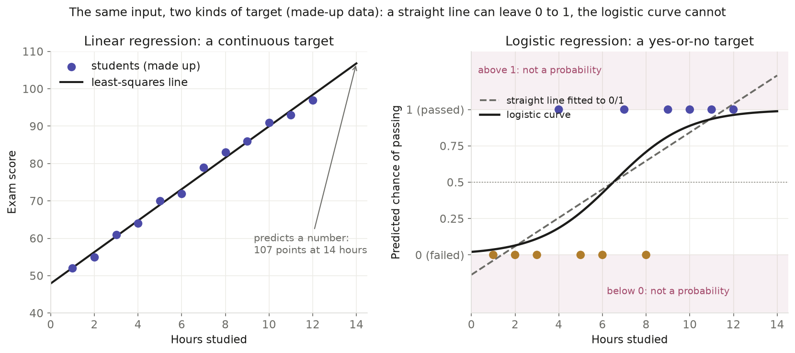
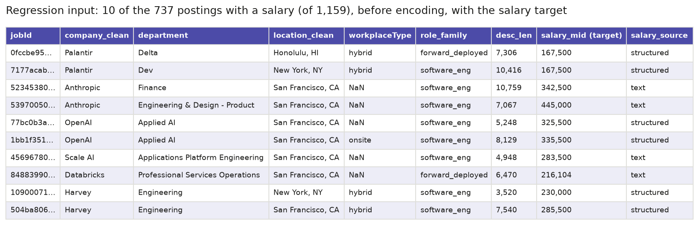
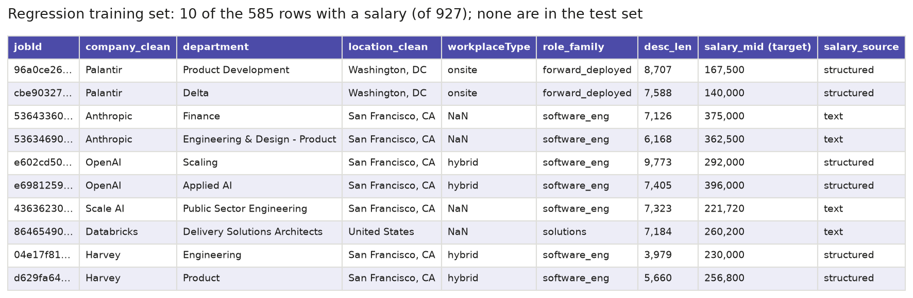
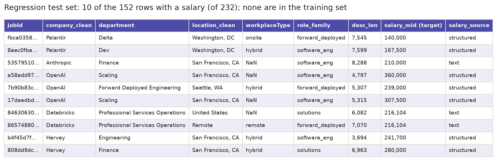
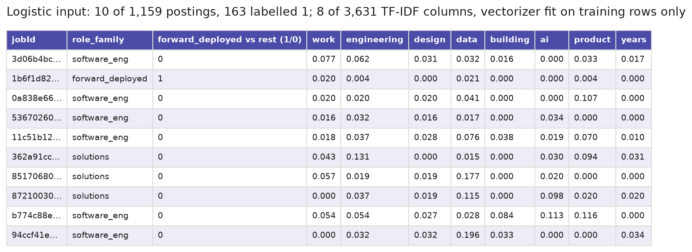
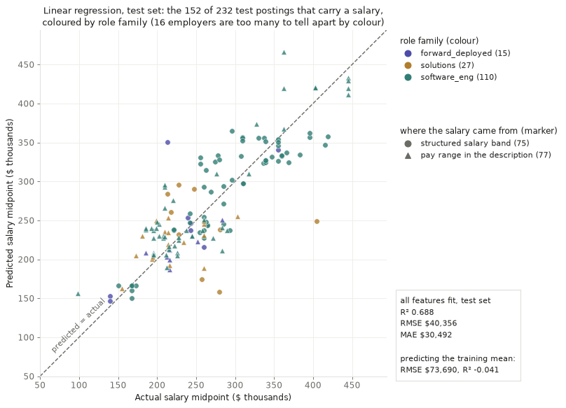
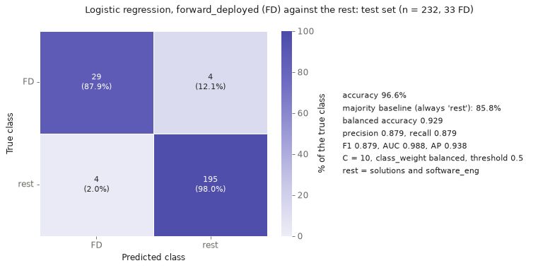

Regression
Overview
Linear regression is a supervised method that predicts a number. It assumes that the number to be predicted, called the target, is a weighted sum of the features plus a constant: predicted value = b0 + b1·x1 + b2·x2 + …. Each weight, or coefficient, says how much the prediction changes when its feature goes up by one unit while every other feature stays the same. The weights are chosen by least squares, which picks the line, or in more dimensions the flat surface, that makes the sum of the squared differences between the predicted and the actual values as small as possible. Linear regression is quick to fit and easy to read, and it is used for tasks such as forecasting sales, estimating house prices from size and location, and studying how pay depends on experience and occupation.
Logistic regression is also a supervised method, but it predicts a class rather than a number. In its basic form it answers a yes-or-no question, such as whether an email is spam, whether a patient has a disease or whether a customer will leave, and it gives the probability that the answer is yes. It starts from the same kind of weighted sum as linear regression, called the linear score, z = b0 + b1·x1 + b2·x2 + …, but it does not use the score itself as the prediction. That matters because a probability has to stay between 0 and 1, while a straight line keeps rising or falling without limit. A straight line fitted to a 0/1 outcome predicts values below 0 and above 1, which are not probabilities (first figure below).
Logistic regression passes the linear score through the sigmoid function, p = 1 / (1 + exp(−z)), which turns any score into a probability between 0 and 1 (second figure below). A score of 0 gives exactly 0.5, large positive scores give probabilities close to 1, and large negative scores give probabilities close to 0. For example, a score of 1 gives 1 / (1 + exp(−1)) = 0.731, and a score of −2 gives 1 / (1 + exp(2)) = 0.119. The probability becomes a class by comparing it with a threshold. With the usual threshold of 0.5, the model predicts yes when p is at least 0.5, which is the same as a linear score of at least 0. Moving the threshold trades one kind of mistake for another. A lower threshold finds more of the true yes cases, which raises recall, but it also lets in more false alarms, which lowers precision. A higher threshold does the reverse.
The coefficients of a logistic regression are read through the odds, the probability of yes divided by the probability of no. The linear score is the logarithm of the odds, so raising a feature by one unit adds its coefficient to the log odds and multiplies the odds by exp(coefficient), a number called the odds ratio. An odds ratio above 1 makes yes more likely and one below 1 makes it less likely. The coefficients are found by maximum likelihood, which picks the values that make the labels in the training data most probable, usually with a penalty that keeps the coefficients from growing too large. In scikit-learn, the Python library used here, the strength of that penalty is set by C: a smaller C means a stronger penalty and smaller coefficients.
The two methods therefore differ in what they predict and in how they are judged. Linear regression predicts a number and is judged by how far its predictions fall from the true values, for example with the root mean squared error (RMSE), the mean absolute error (MAE) and R², the share of the variation in the target that the model explains. Logistic regression predicts a probability and a class, and it is judged like any classifier, with a confusion matrix, accuracy, precision and recall.
This project uses both. Linear regression predicts the salary a job posting advertises, the midpoint of its pay range, from facts about the posting: its company, department, location, working arrangement, role family and the length of its description. The question is how much of the pay on offer depends on the kind of job and how much on the employer. Logistic regression asks a yes-or-no version of the question from the Naive Bayes page: is a posting a forward deployed engineering job or not, judged only from the words of its description? Its results are compared with Naive Bayes models fitted to the same question.

![Two panels. Left: the S-shaped sigmoid curve of probability against linear score from −6 to 6, with dotted lines at a probability of 0.5 and a score of 0, the side above 0 shaded and marked predict yes, and three worked points: z = −2 gives 0.119, z = 0 gives 0.500 and z = +1 gives 0.731. Right: step lines of recall and precision against the threshold from 0 to 1, recall falling and precision rising, with dotted lines at thresholds 0.3, 0.5 and 0.7 and a box listing the counts and scores at each.](figures/reg_concept_2.png)
Data Preparation
Linear and logistic regression are supervised methods, so they can only learn from labelled data. Every row needs the right answer attached, the value of the target, because the model learns how the features relate to that answer and is then checked on how well it predicts the answer for rows it has not seen. A row without a target gives it nothing to learn from and nothing to check against. As on the Naive Bayes and Decision Trees pages, the data is the 1,159 postings in the three role families: 721 software_eng, 275 solutions and 163 forward_deployed. The role family comes from each posting’s job title by keyword rules, so the title is never used as a feature, and neither are the seniority level and the flag for repeated copies, which are also read from the title.
Both models use the same split as the Naive Bayes and Decision Trees pages. The 1,159 postings were divided at random into a training set of 927 (80%) and a test set of 232 (20%), stratified so that each role family has the same share in both. The two sets are disjoint, meaning no posting is in both, and this was checked by job ID. Each model is fitted on training postings only, and the test postings are used once, at the end, to measure how well it predicts postings it has never seen. If test postings were also in the training set, the model would be graded on examples it had already learned from, and its errors would look smaller than they really are. Keeping the same split also means that the logistic regression and the Naive Bayes models are scored on exactly the same 232 postings.
The two models need different targets. Linear regression needs a numeric target, so it predicts salary_mid, the midpoint of the yearly pay range in US dollars: a posting that offers $200,000 to $300,000 has a midpoint of $250,000. Only postings that state a pay range can be used, which leaves 737 of the 1,159 postings, 585 in the training set and 152 in the test set. Logistic regression needs a two-class label, so it predicts a 0/1 column made from the role family: 1 for forward_deployed and 0 for the other two families, solutions and software_eng. Every posting has a role family, so all 927 training postings (130 of them labelled 1) and all 232 test postings (33 labelled 1) are used.
The features differ as well. Linear regression uses six facts about each posting: company, department, location, working arrangement, role family and the length of the description in characters. Scikit-learn only accepts numbers, so the five category columns were one-hot encoded: each category becomes its own 0/1 column. In each column one category was left out as the reference level, the most common one in the training set: OpenAI, the Engineering department, San Francisco, a missing working arrangement and software_eng. Every coefficient for a category is then a difference in dollars from that reference. A category that appears only in test postings, such as the departments of 6 test postings and the location of 1, is treated as the reference. The description text itself is never used to predict salary, because part of the salary is read from it, as described below. Logistic regression uses the masked description text of the Naive Bayes page, with company boilerplate removed and role phrases such as “forward deployed” taken out, turned into 3,631 TF-IDF word columns. The vectoriser was fitted on the training postings only and then applied to the test postings.
Most employers do not fill in the salary field of their job board, and for these 1,159 postings it holds a usable US dollar range for only 351. Many employers write the pay range into the description instead, for example “Annual Salary: $320,000-$405,000 USD”, so a separate step reads these ranges from the text. It records the currency and keeps only US dollars, turns hourly rates into yearly ones (× 2,080 hours, as in the cleaning of the salary field), leaves out ranges described as on-target earnings, which include sales commission, and skips placeholders such as “$1-$1”. Some postings list a range for each of several pay zones, from the most expensive cities down. The highest range is kept, as the band for the top-cost zone, which affects 22 training postings and 3 test postings. This step adds 386 salaries, so about half of the 737 come from the description text. Where a posting has both, the range read from the text matches the salary field exactly in 79 of 87 cases, and in the other 8 the text was read correctly but the employer’s text and salary field disagree. A further 80 postings with only a text range were checked by hand, and every value matched its text.

Labelled input for linear regression: ten of the 737 postings with a salary, with the six features before encoding and the salary midpoint the model predicts. The last column shows where each salary came from, the job board’s salary field (structured) or a pay range in the description text (text). NaN marks a missing working arrangement. Job IDs are shortened in this image, and the linked file has them in full.

Training set: ten of the 585 training postings with a salary. The coefficients and the reference levels are learned from rows like these.

Test set: ten of the 152 test postings with a salary. None of their job IDs is in the training set, and their salaries are only used to score the model’s predictions.

Labelled input for logistic regression: the ten postings shown on the Naive Bayes page, with the 0/1 label, 1 for forward_deployed, and the TF-IDF weights of eight of the 3,631 word columns, the eight words found in the most training postings. A weight of 0 means the posting does not use the word. The vectoriser was fitted on the training postings only.
Data files
- Raw data: job postings collected from company job boards with the Apify multi-ATS job scraper, using fetch_apify.py. The full raw files are about 64 MB and are not stored in the repository, so a 20-row raw sample is linked instead.
- Clean data: ats_final.csv, the 4,294 cleaned postings this page starts from, before repeated copies are removed and the three role families are selected.
- Pay ranges: pay_ranges.csv, the pay range read from the description text of each of the 3,718 deduplicated postings, with its currency, its interval, the zone flag and whether it can be used as a yearly US dollar salary.
- Pay range check: pay_range_validation.txt, the evidence for the checks described above: the 87 postings with both a salary field and a pay range in the text, with the text around each of the 8 that differ, the 80 postings checked by hand with the text around each, and the postings whose range is left out of the salary.
- Linear regression input sample: reg_input_sample.csv, shown in the first table above.
- Training set sample: reg_train_sample.csv, shown in the second table above.
- Test set sample: reg_test_sample.csv, shown in the third table above.
- Logistic regression input sample: reg_logistic_sample.csv, shown in the fourth table above.
Code
| File | What it does | Language | Main packages |
|---|---|---|---|
| extract_pay_ranges.py | Reads the pay range from the description text of each posting, records its currency, interval and basis, turns hourly rates into yearly ones, picks one range when a posting lists several pay zones, and saves the result to pay_ranges.csv. | Python 3.12 | pandas, numpy |
| validate_pay_ranges.py | Compares the pay ranges read from the text with the salary field, draws again the 80 postings that were checked by hand and prints the text around each, counts the postings each rule affects, and writes the pay range check. | Python 3.12 | pandas |
| regression_models.py | Builds the salary target, fits the four linear regressions and the training-mean baseline, runs the checks on multi-zone rows and repeated pay bands, chooses C for the logistic regression and alpha for the two Naive Bayes models by cross-validation, compares the models on the test set, draws the result charts and writes a results report. | Python 3.12 | scikit-learn, pandas, numpy, scipy, matplotlib, seaborn |
| make_module4_samples.py | Saves the small samples of the regression and AdaBoost data shown on these pages, and draws them as table images. | Python 3.12 | pandas, numpy, scikit-learn |
| make_module4_concept_figures.py | Draws the explanatory figures in the Overview from small made-up data. | Python 3.12 | matplotlib, numpy, scipy |
| 04_regression_adaboost.ipynb | Runs the regression steps and then the AdaBoost steps from start to end, prints every result and saves the result figures. | Python 3.12 (Jupyter) | pandas, numpy, scikit-learn |
Results
Both kinds of model were fitted on the training postings only and scored once on the test postings. For linear regression, four fits with different sets of features are compared with a baseline that predicts the average training salary, $279,462, for every posting. Linear regression has no setting to tune, such as a penalty strength or a learning rate, so three of the fits differ only in the features they use, the fourth leaves the multi-zone rows out of training, and none of them was picked for how well it scored. For logistic regression, the penalty strength C was chosen by 5-fold cross-validation on the training postings. The training postings were split into five parts, each part was held out in turn while the model learned from the other four, and the C with the best average F1 score for forward_deployed was kept, out of 0.01, 0.03, 0.1, 0.3, 1, 3, 10, 30 and 100. The best was C = 10. Only 33 of the 232 test postings are forward deployed, so the model was told to give the two classes equal total weight during training (class_weight = “balanced”), which stops it from ignoring the smaller class. The numbers below refer to the figures further down the page.
Linear regression: salary midpoint
RMSE is the square root of the average squared difference between the predicted and the actual midpoint, so it is in dollars and counts large misses heavily. MAE is the average size of a miss. R² is the share of the variation in salary between test postings that the model explains: 1 would be perfect, and 0 is no better than predicting the average.
| Fit | Training rows | RMSE (dollars) | MAE (dollars) | R² |
|---|---|---|---|---|
| baseline: training mean | 585 | 73,690 | 61,671 | -0.041 |
| all features | 585 | 40,356 | 30,492 | 0.688 |
| without company and department | 585 | 66,911 | 53,356 | 0.142 |
| company only | 585 | 48,731 | 35,435 | 0.545 |
| all features, multi-zone rows out of training | 563 | 43,417 | 32,192 | 0.639 |
With all six features, the model explains 68.8% of the variation in salary between the test postings (R² 0.688), and its predictions miss by $30,492 on average, against $61,671 for the baseline (figure 1). Most of that comes from the employer. Company alone gives an R² of 0.545, and leaving out company and department drops it to 0.142, even though location, working arrangement, role family and description length are all still in the model. Employers pay very differently for similar work. With company as the only feature, the average OpenAI posting offers $335,206 at the midpoint, the average Palantir posting $177,955 less and the average Anthropic posting $61,676 more.
The 22 training salaries taken from postings with several pay zones, where the highest zone range was kept, were checked separately. Such a salary would be too high for a posting located in a cheaper zone, and the model would then predict less than the recorded value. It does the opposite. In cross-validation on the training postings, the model predicted these 22 postings on average $15,538 above their recorded salary, against $1,054 for the other postings, and the difference is within the range of chance (permutation test, p = 0.13). Leaving them out of training lowers the test R² to 0.639, but this comes about two-thirds from Amplitude and Webflow dropping out of training altogether, so that their test postings are priced like OpenAI’s, and about a third from Scale AI losing 11 of its 34 training postings. It does not show that the zone values are wrong.
Employers also post the same pay band for many jobs. 72 of the 152 test postings have a twin in the training set with the same company, department, location, working arrangement, role family and pay band, so part of the fit comes from recognising repeats. Keeping one copy of each repeated band lowers the cross-validated R² from 0.720 to 0.605, and a model trained on those rows still reaches 0.666 on the test set.
What the coefficients mean
Each coefficient is a difference in dollars from the reference levels, with every other feature held fixed. The role family coefficients can be read directly. The coefficient for solutions is −$39,647: compared with a software engineering posting at the same company, in the same department and location, with the same working arrangement and description length, a solutions posting advertises about $39,600 less at the midpoint of its range. The coefficient for forward_deployed is −$21,312, so a forward deployed posting advertises about $21,300 less than a comparable software engineering posting. Description length has a coefficient of −$1.61 per character, about $1,600 less for every extra 1,000 characters. The company and department coefficients are harder to read, because many departments exist at only one company, so the model cannot fully separate the two and splits their effect between them. The company-only fit above gives the cleaner comparison between employers. All 136 coefficients are listed in the results report.
Logistic regression: forward_deployed against the rest
Always guessing “not forward deployed” would be right for 199 of the 232 test postings, 85.8%, without finding a single forward deployed job, so accuracy alone says little here. Balanced accuracy averages the recall of the two classes, so that guess scores 0.5 on it. AUC and average precision (AP) measure how well the predicted probabilities rank forward deployed postings above the others, whatever the threshold.
| Model | Accuracy | Balanced accuracy | Precision | Recall | F1 | AUC | AP |
|---|---|---|---|---|---|---|---|
| majority baseline (always ‘rest’) | 0.8578 | 0.500 | — | 0 | 0 | 0.500 | 0.142 |
| logistic, balanced | 0.9655 | 0.9293 | 0.8788 | 0.8788 | 0.8788 | 0.9878 | 0.9383 |
| logistic, unbalanced (default) | 0.9655 | 0.8914 | 0.9630 | 0.7879 | 0.8667 | 0.9883 | 0.9435 |
| MultinomialNB, alpha 0.01 | 0.9440 | 0.8157 | 0.9545 | 0.6364 | 0.7636 | 0.9796 | 0.9017 |
| BernoulliNB, alpha 0.1 | 0.9526 | 0.8460 | 0.9583 | 0.6970 | 0.8070 | 0.9670 | 0.8732 |
The balanced logistic model finds 29 of the 33 forward deployed postings and wrongly flags 4 of the other 199, for an accuracy of 96.6% (figure 2). Its precision and recall are both 0.879: 29 of its 33 forward deployed predictions are right, and it finds 29 of the 33. Without class weights, the same model finds only 26 but makes only 1 false alarm, so the weighting trades three more false alarms for three more forward deployed postings found. Its AUC of 0.988 means that a randomly chosen forward deployed posting gets a higher probability than a randomly chosen other posting 98.8% of the time.
What the logistic model weighs
The coefficients show which words push a posting toward forward deployed. The largest is for “customer”, +4.879 per unit of TF-IDF weight. A TF-IDF weight of 1 would mean the whole posting is that one word, so it is more useful to look at a typical posting that uses the word, where its weight is 0.074. For such a posting the log odds rise by 4.879 × 0.074 = 0.361, so the odds of being forward deployed are multiplied by exp(0.361) = 1.43. In plain words, using “customer” as often as a typical posting does makes the odds of a forward deployed job 43% higher than for the same posting without the word. “Customer” appears in 108 of the 130 forward deployed training postings and in 406 of the other 797. Other words that raise the odds include production, delivery, engagements and travel. Words that lower them include infrastructure, platform and performance, and a posting that uses “infrastructure” at its typical weight has its odds multiplied by 0.83.
Against Naive Bayes
On the Naive Bayes page, Naive Bayes sorted the same postings into three role families. To compare like with like, Multinomial and Bernoulli Naive Bayes were fitted again to the same yes-or-no label, with the same masked text, the same split and alpha chosen by the same cross-validation. On this question the logistic model finds more forward deployed postings: 29 of the 33, against 21 for Multinomial and 23 for Bernoulli Naive Bayes, which each make only 1 false alarm. Of the 33 forward deployed test postings, 8 are found by the logistic model and missed by Multinomial Naive Bayes, and none the other way round (exact McNemar test, p = 0.008). Against Bernoulli Naive Bayes the split is 6 to 0 (p = 0.031). Each forward deployed posting is worth 3 points of recall, so these gaps are 24 and 18 points. Counting the false alarms as well, overall accuracy is 96.6% against 94.4% and 95.3%, a difference within the range of chance.
Part of the gap comes from the class weights. Naive Bayes starts from each class’s share of the training data, 14% for forward_deployed, while the balanced logistic model gives both classes equal weight. Without class weights, the logistic model finds 26, 5 and 3 postings more than the two Naive Bayes models, which is not a clear difference. For comparison, the three-class Bernoulli model on the Naive Bayes page found 25 of the 33 with a single false alarm.


1. Predicted against actual salary midpoint, test set
The 152 test postings with a salary. Points near the dashed line are predicted well. The model explains 68.8% of the variation in salary, and its typical miss is $30,492.


2. Confusion matrix, logistic regression (forward_deployed against the rest)
The model finds 29 of the 33 forward deployed postings and wrongly flags 4 of the other 199, for 96.6% accuracy against 85.8% for always saying "not forward deployed".
Conclusions
What a job pays depends far more on who is hiring than on the kind of job. Knowing only the employer explained more than half of the differences in the pay advertised, and every other fact about a posting added only a little more. Employers in this data pay very differently for similar work: the average posting at OpenAI offered about $335,000 a year, and the average posting at Palantir about $157,000.
Within the same employer, the kind of job still matters. A solutions posting offered about $40,000 less than a software engineering posting at the same company and in the same place, and a forward deployed posting about $21,000 less. On pay, the forward deployed engineer sits between software engineering and solutions work, which matches what the earlier pages found from the wording of the postings.
Whether a posting is for a forward deployed job can be told from its description alone. Reading only the words, with job titles and role names removed, a simple scoring method found 29 of 33 forward deployed postings it had not seen before and raised only 4 false alarms among almost 200 other jobs. The words that pointed to a forward deployed job were about customers, delivering results, engagements and travel, and the words that pointed away were about infrastructure, platforms and performance.
For the question of how AI is changing tech hiring, the pay that AI companies advertise says more about each company than about the new kinds of jobs. The forward deployed engineer is a distinct job, recognisable from what it asks people to do, but it is not paid at a premium: at the same employer it is advertised for somewhat less than software engineering.